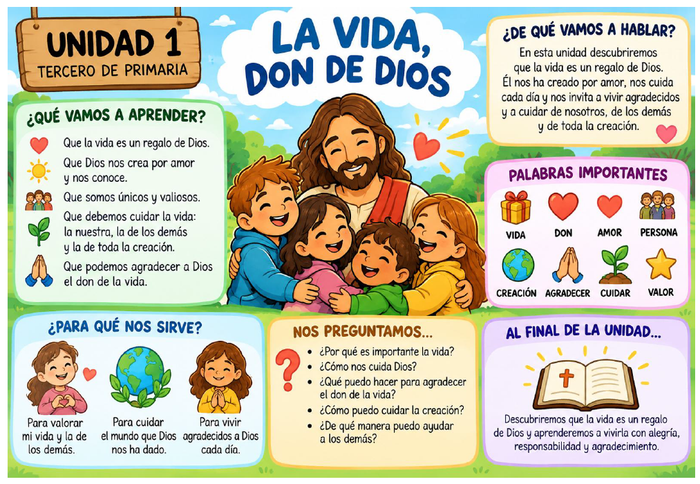

📖
Material completo de la Unidad 1
Todos los contenidos y actividades están reunidos en este PDF.
Abrir PDF de la unidad →⭐ RETO DE LA UNIDAD
Esta semana, damos gracias por el regalo de la vida.
Elige una acción concreta para valorar la vida, cuidar a los demás o cuidar la creación.